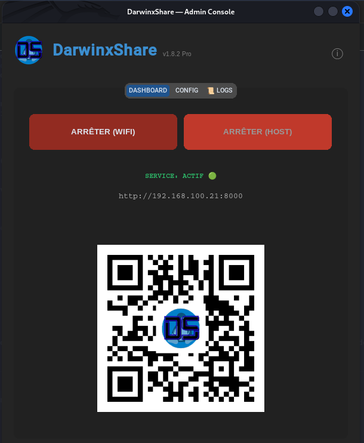
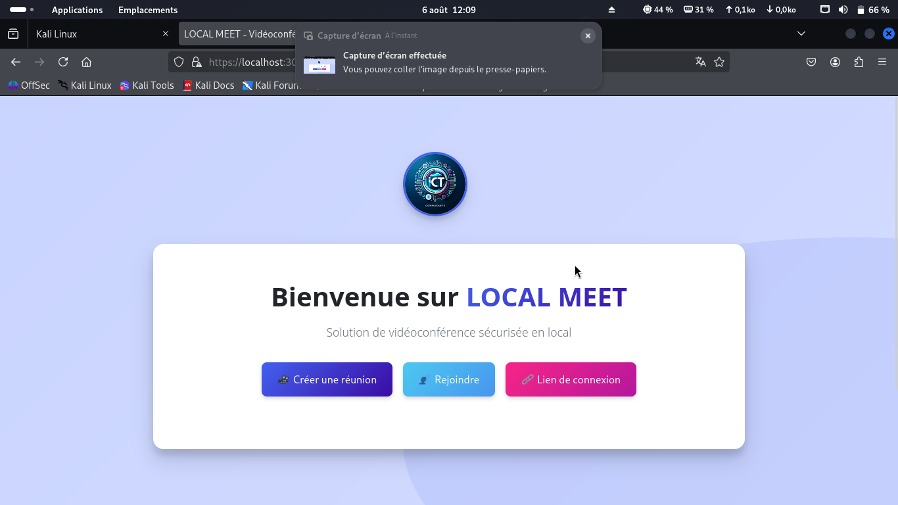
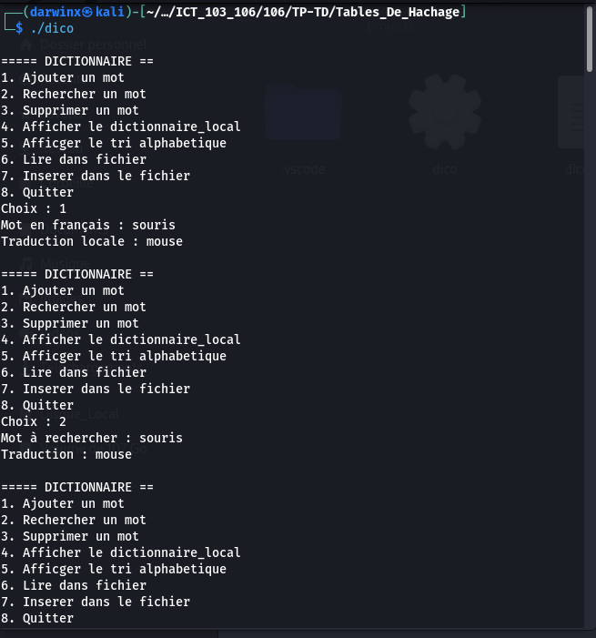

Réalisations Phares
Tout voir

DarwinxShare Pro
Moteur de partage de fichiers haute performance Wi-Fi entre Linux et iOS avec streaming Safari.
PythonFlaskWi-Fi Stream

MeetLocal
Plateforme de visioconférence WebRTC en temps réel avec partage d'écran sécurisé.
Node.jsWebRTCSocket.IO

Dictionnaire Bilingue C
Implémentation bas-niveau en C avec tables de hachage et gestion mémoire optimale.
CAlgorithmesData Structure
Technologies & Domaines
Détails
Python
JavaScript
C Lang
PHP
Linux Ops
Docker
GenAI / IA
Security Audit
Écosystème & Communautés
Diplôme Phare
IBM Cybersecurity Analyst
Spécialisation Professionnelle Certifiée (14 cours, 2026)
Voir les accréditations
Live System Pulse
--:--:--
System Local Time (UTC+1)
Activités Annexes
Échecs & Stratégie
Anticipation & tactique
Lecture : Le Prince
Nicolas Machiavel